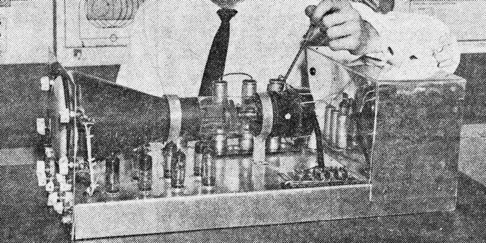
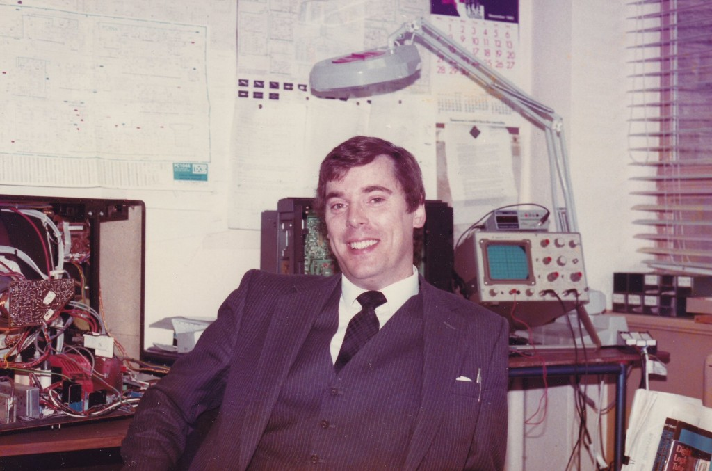
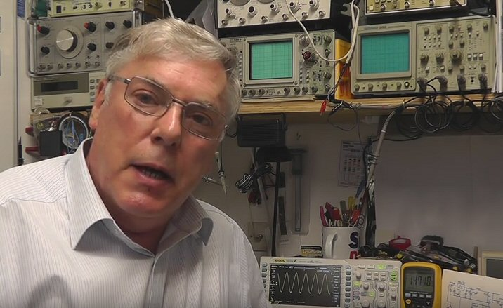

My interests in electronics started when I was a young boy. My father gave me a screwdriver when I was about 8 years old and I proceeded to take things apart. This interest in to how things worked and anything electrical resulted in me taking up electronics as a hobby in my teens. With a friend who’s father gave us the use of a small garden shed, we made a small workshop and started to play around with old radios and built simple electronics projects. In those days we could not afford to buy new parts so we used to buy secondhand parts from an army store which sold war surplus parts. Another source of parts at that time was old valve TV chassis that were advertised in the Practical Wireless magazine, which you could buy quite cheaply.
In the 1960s, at school I started a Radio Club with two school friends and we used to build valve radios and amplifiers. I also joined a Radio Society which cost ten shillings a year membership; they held a meeting once a week on a Wednesday evening and also arranged visits to places like Mullard and the BBC to name just a few. Each month they would have a ‘junk sale’ where each member would bring in surplus radio components to be auctioned for a few coppers (pence in today’s terms).
Left to right Philip Emmett, Mike Smith, Louis Scully at school Radio Club
The above photo shows me on the far right with two friends at the school’s radio club with a short wave radio we had built from old parts. I always seemed to have a ruler, pencil and screwdriver in my top pocket.
After leaving school at the end of 1964 I went to Technical College in Leeds to study Electronics and specialised in Radio and Television Servicing and in my 4th year at college I won a prize for best student of that year. During this period I worked for a small family business in Leeds and did a 5 year apprenticeship with them. As an apprentice I would spend time in different parts of the business which included radio, T.V. and small appliance servicing, design and build of audio amplifiers for public address systems, and electrical wiring and installation. This gave me a very broad overview of electronics and electrical engineering which would help in my later career.
The above photo show an oscilloscope which I designed and built while at college
After passing my final exams I moved to a national Television Rental Company (DER) in Leeds which was part of the wider Thorn Group (later they became Thorn EMI). I was one of the first engineers to be involved in colour TV servicing. Later I became a Service Supervisor and managed their main Service Department in Leeds for a number of years. The company then arranged for me to go to teacher training college to get my teaching certificate. This enabled me to take on the roll of Technical Training Officer and run a training school in Bradford for 8 years, teaching Television and Video Servicing. I was also responsible for recruiting and teaching young apprentices. I then had the opportunity to move up in the company and became the Technical Executive responsible for the whole of Yorkshire, later covering the whole of the north of England and Scotland.
The above photo of me was taken in 1983 when I was the Technical Executive
In 1980 when Sinclair launched the ZX80 computer I started to learn computer programming and wrote a number of computer games programs together with a colleague, for the ZX80. One of these was a “landing a module on the moon” which we advertised in a electronics magazine and managed to sell copies of the program. Shortly afterwards I bought a barebones computer from Ohio Scientific Instruments called the Ohio Superboard which used the 6502 Microprocessor and 4K RAM of memory and learned to program in 6502 assembly language as well as Microsoft Basic. Computers have moved along way since those days. I spent some time teaching assembly language programming in the evenings.
In 1984 the company Technical Director retired and I was lucky to be selected to take over his role as the Company Technical Director. This meant I had to move my family south as the head office was near Twickenham, Middlesex. A year later in 1985 I set up and launched the first U.K. satellite T.V. rental business with Thorn EMI, 4 years before SKY TV was launched. At the time the aerial dish size was 1.8 metre in diameter and the rental cost was around £15 a week. I announced the launch of satellite TV rental on ITN News on the 25th November 1985.
The only satellite T.V. channels at the time were from Intelsat and Eutelsat satellites and included such programmes as Music Box, Screen Sport and The Children’s Channel.
I later took on the added responsibility for purchasing and product development and was responsible for setting up the first specialist video camera repair service network.
After a number of years as Technical Director the company reorganised and I moved to the International Operation of Thorn EMI. There I was responsible for managing their overseas operation in Europe, Middle East & Africa and Asia Pacific regions. Although I still had my office based in the South of England, a large amount of my time involved traveling all over the world. In later years I focused on developing the business in Europe and the Middle East. This involved setting up new businesses as well as making acquisitions.
After more than 30 years of service with Thorn EMI I decided to take early retirement in 2000. I continued to work part time and spent several years working as the Acquisitions Director for a Norwegian company involved in Interactive T.V. systems for hotels.
I finally decided to retire fully a few years later which allowed me to spend more time on my other interests which includes family history and military history. For those interested, have a look at my Worcestershire Regiment website at www.worcestershireregiment.com, the design of which was created by my eldest son.
My love for electronics has always been there in the background and since I retired fully this has allowed me to go back to my roots and indulge myself in electronics once again but this time as a hobby. I built myself a workshop and as my eldest son played the electric guitar I spent time with him designing and building valve amplifiers for guitars. I have since broadened it out in to all aspects of electronics which brings back many fond memories of my earlier days. As I enjoy helping and sharing my passion for electronics with others I started a You Tube channel on Hobby Electronics in 2015.
